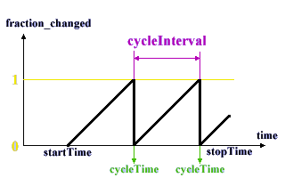

| There's Klingons On The Starboard Bow... |
Now that you know the basic architecture of the VRML animation system, we're going to start covering the actual nodes you will use to add interaction and animation to your worlds. There are three main classes of nodes that we're going to learn about: Sensors, Interpolators and Scripts. These, in turn, can be divided into sub-categories. Right now, we're going to look at Sensors. The first load we're going to learn about are Environmental Sensors. These do not accept input directly from the user, but instead detect environmental events, such as the passage of time, the position of the user, and so on.
TimeSensor
The TimeSensor is basically a timer. It is quite unique in VRML, in that it has no position in the world, and no associated geometry. It is simply an abstract timer, just sitting there counting. It is also one of the most important nodes in VRML animation. It can be used to generate regular events, to provide one-off timed events, or to drive interpolator nodes. The syntax is as follows, I'll explain the individual fields in a minute...
TimeSensor {
exposedField SFTime cycleInterval 1
exposedField SFBool enabled TRUE
exposedField SFBool loop FALSE
exposedField SFTime startTime 0
exposedField SFTime stopTime 0
eventOut SFTime cycleTime
eventOut SFFloat fraction_changed
eventOut SFBool isActive
eventOut SFTime time
}
OK. First of all is the cycleInterval field. This is quite self-explanatory, and is the time that the timer will run for before resetting. enabled is a fairly obvious field, and very useful for starting and stopping timers. The loop field specifies whether the timer will continuously loop or run just once. If it loops, an event will be generated every cycleInterval, otherwise only one will be generated, after cycleInterval. startTime and stopTime are SFTime values that specify when the timer is to start and stop, the same as for the Sound node.
Now, the events. These are the really important parts of the TimeSensor. The first is cycleTime. This event is sent every time the timer reaches its cycleInterval, whether it loops or not. The value sent is the current time. So, if you had a looping TimeSensor with a cycleInterval of 1 second, the cycleTime event would be sent every second with a value of the current time (which would increase by 1 each time). This is useful for regular events and one-off signals. To drive continuous animations, such as Interpolator nodes, we need a continuous stream of signals. This is provided by the fraction_changed eventOut. This generates events as fast as it can (though there is no guarantee in the spec of how regularly such events will occur) which have a SFFloat value that is the fraction of the cycleInterval that is currently complete. For instance, if you had a cycleInterval of 10 seconds, if a fraction_changed event happens to be generated after 5 seconds, it would have a value of 0.5. The diagram below shows the relationship between the various values in a looping TimeSensor.
Note, however, that there is not guarantee that an event will be generated at this particular time, only that events in general will be generated. This event is very useful for driving interpolators, which use key values for the values which they are interpolating, tied to particular fractions. This will all be covered later, though. The time event is generated at the same time as a fraction_changed event, and contains a value corresponding to the absolute time of the event. The isActive event is generated whenever the timer starts and stops. The value of the SFBool is TRUE or FALSE, depending on whether the timer has started or stopped running.
This example (code) is a very simple one, with the cycleTime event of a looping TimeSensor routed to the startTime exposedField of a one-shot AudioClip node. This world is just a piece of text and the sound, which triggers every 2 seconds. Obviously, there is a simpler way to do this particular effect, but it gets the point across, doesn't it? You'll learn more about using fraction_changed when we come across interpolators later on.
VisibilitySensor
The next type of sensor is the VisibilitySensor. This is more of an interaction sensor, in that it defines an invisible box shape which sends events when it enters and leaves the users field of vision. If the box enters the users view, the isActive event is sent with a value of TRUE, and the enterTime event is sent with the time of entry. If it leaves, the isActive event is sent with a value of FALSE, and the exitTime event is sent with the time of exit. The center and size fields define the size of the box. The complete definition is shown below:
VisibilitySensor {
exposedField SFVec3f center 0 0 0
exposedField SFBool enabled TRUE
exposedField SFVec3f size 0 0 0
eventOut SFTime enterTime
eventOut SFTime exitTime
eventOut SFBool isActive
}
VisibilitySensors are very useful for optimising your worlds. Having a large number of animations running at a time can be very CPU-intensive, and will slow your worlds down horrendously. By using VisibilitySensors to stop animations that are outside the users field of vision, you can speed up heavily animated worlds no end. This is done by simply routing the isActive event to the enabled field of the appropriate TimeSensors or whatever.
Now, take a look at this example world and its associated code. It consists of a box, with a VisibilitySensor in the same position. When you can see the box, you can hear the sound. If you turn away, until the box disappears off the edge of the screen, the sound will stop. Then, it will restart when you see the box again. This is done all very simply. The sound is a looping AudioClip, and the enterTime and exitTime fields of the VisibilitySensor are routed to the startTime and stopTime of the AudioClip.
ProximitySensor
A ProximitySensor is very similar to a VisibilitySensor, except that is generates isActive events when the user enters or leaves the box defined. The enterTime and exitTime events function as before, as does the isActive event. While the user is inside the ProximitySensor, events will be generated whenever his position or orientation change relative to the sensor, along the eventOuts position_changed and orientation_changed. These will contain the new value of the avatar's position or orientation, whichever is appropriate. Remember, these are in the local coordinate system of the ProximitySensor, so will be relative to the centre of the sensor.
ProximitySensor {
exposedField SFVec3f center 0 0 0
exposedField SFVec3f size 0 0 0
exposedField SFBool enabled TRUE
eventOut SFBool isActive
eventOut SFVec3f position_changed
eventOut SFRotation orientation_changed
eventOut SFTime enterTime
eventOut SFTime exitTime
}
This example world (with code) shows a ProximitySensor in action. If the user approaches within a certain distance of the box, he enters the ProximitySensor and the sound is started. When he leaves, the sound stops. This uses the same routings as in the previous example, routing the enterTime and exitTime to the startTime and stopTime of the AudioClip.
Collision
This node is perhaps slightly different from those we've already covered. This is really used to control collision detection in a world, but also can be used as a collision sensor for animation. Basically, it is a grouping node that you can use to enable or disable collision detection between the user and its children. If collide is TRUE, collision detection will be performed, and the object will appear solid. If it is FALSE, it will not be tested for collisions, and the user will be able to pass straight through. You can also specify a proxy, which is a node used for collision detection INSTEAD OF the geometry in the children field. It has the standard fields of any grouping node, addChildren, removeChildren, bboxCenter, and bboxSize. Don't worry about these for now, we'll deal with them later. The reason this is included in this section is the collideTime eventOut. This can be used to activate an event when the user hits the geometry. It is an SFTime eventOut, and is generated whenever the user hits the appropriate geometry (children or proxy), with the value of the time at which the collision occurred.
Collision {
eventIn MFNode addChildren
eventIn MFNode removeChildren
exposedField MFNode children []
exposedField SFBool collide TRUE
field SFVec3f bboxCenter 0 0 0
field SFVec3f bboxSize -1 -1 -1
field SFNode proxy NULL
eventOut SFTime collideTime
}
The Collision node can be very useful in speeding up your worlds. If you have some very complex geometry, you can replace the collision detection with that object with collision detection for a bounding box, by providing a proxy geometry to collide with. This will reduce realism slightly, but increase the rendering performance of your world no end. You can also use proxy geometry to constrain the user to certain parts of the world, so that the user is bounded by an invisible wall beyond which he can't pass. This is useful for making your worlds easier to navigate and use.
This example world and its code demonstrate the use of the Collision node as a sensor, but also how proxy geometry and the collision field affect the world. The cyan sphere on the left has its collision field set to FALSE. The magenta sphere has collision TRUE, and its collideTime is routed to the startTime of a one-shot AudioClip. The yellow sphere on the right has a proxy geometry which is a box that is 4 metres each side. The collideTime of the node is also routed to a different AudioClip. Note that you cannot approach the yellow sphere as closely as the magenta sphere before the noise sounds and you cannot approach further.
Scrape 'Em Off, Jim
Well, that the environmental sensors for you. Next time, we're going to cover pointing device sensors, which we can use to get input and control data from the user.